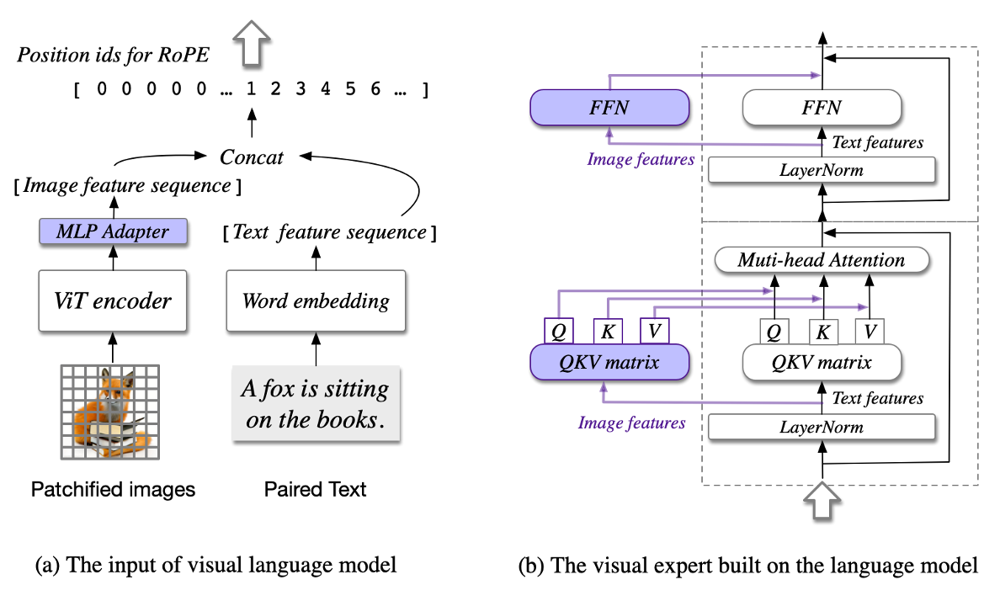
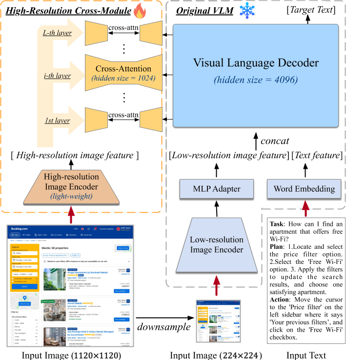

清华和智谱发表了CogVLM和CogAgent两篇文章，前者主要是提出了一个视觉大语言模型，后者对前者做了GUI任务的改进以及对高分辨率图像处理的改进，论文地址和代码地址如下，
-
Paper
-
Code
接下来先看CogVLM: Visual Expert for Pretrained Language Models这篇文章，
[arXiv] CogVLM: Visual Expert for Pertrained Language Models

文章先讲了一个从 shallow alignment 到 deep fusion 的故事，前者我还需要再读一下对应的论文，我大概的理解是shallow alignment在固定基座模型参数的情况下，想办法把视觉能力加入，而这篇文章所谓的deep fusion改变了基座模型内部的处理过程和参数。
如上图所示，只有紫色的部分在训练过程中参数会发生变化，本文和其他模型最主要的不同就在于在Language model中加入的visual expert结构，其实就是在每个block中加了一个处理视觉特征的分支，但是文章中没有具体解释它这个分支是如何加上去的，比如在计算过程中，我如何区分谁是图像特征，谁是文本特征等等，所以需要看下代码实现，在CogVLM仓库下的
utils/models/cogvlm._model.py
文件中，有如下代码，
from sat.model.official.llama_model import LLaMAModel
class CogVLMModel(LLaMAModel):
def __init__(self, args, transformer=None, **kwargs):
super().__init__(args, transformer=transformer, **kwargs)
self.add_mixin("eva", ImageMixin(args))
self.del_mixin("mlp")
self.add_mixin("mlp", LlamaVisionExpertFCMixin(args.hidden_size, args.inner_hidden_size, args.num_layers, 32))
self.del_mixin("rotary")
self.add_mixin("rotary", LlamaVisionExpertAttnMixin(args.hidden_size, args.num_attention_heads, args.num_layers, 32))
这里用了一个奇怪的库
sat
，搜索到本文单位的另一个库
SwissArmyTransformer
，简单阅读README后得知，这个库提供了一系列的大语言模型以及对模型的修改办法，所以CogVLM实际上是在LLaMA的基础上修改来的，LLaMA来自论文
LLaMA: Open and Efficient Foundation Language Models
，对应sat中的类的代码如下，
class LLaMAModel(BaseModel):
def __init__(self, args, transformer=None, layernorm=RMSNorm, activation_func=nn.functional.silu, **kwargs):
super().__init__(args, transformer=transformer, layernorm=layernorm, activation_func=activation_func, init_method_std=0.01, **kwargs)
self.add_mixin("rotary", RotaryMixin(args.hidden_size, args.num_attention_heads))
self.add_mixin("lm", LMMixin(args.vocab_size, args.hidden_size))
self.add_mixin("mlp", LLaMAMlpMixin(args.num_layers, args.hidden_size, args.inner_hidden_size))
所以LLaMA在此处的实现逻辑实际就是在BaseModel的基础上，添加了
rotary
，
lm
，
mlp
三个模块，对应LLaMA的论文可知，
-
rotary对应文中的 Rotary Embeddings ，就是把整体的位置编码删去，然后在没层前面加一个Rotary的位置编码（RoPE），当然实际上这里代码中的rotary表示其实是attention层+RoPE -
lm我猜测对应最后的输出位置的一个Linear层，因为它的forward函数定义为final_forward，当然它也不重要，主要应该是为了加速 -
mlp就是transformer block中跟在attention层后面的mlp层，这里用了文中的 SwiGLU 激活函数
理清LLaMAmodel后，再来看CogVLM的代码就清除多了，其实就是在LLaMA的基础上作了三部分更改，首先是在模型的最前面，对应LLaMA的word embedding步骤的地方加入了Vit模型处理图像数据，对应图(a) concat之前的部分，
class ImageMixin(BaseMixin):
def word_embedding_forward(self, input_ids, output_cross_layer, **kw_args):
vision_inputs = ...
if input_ids.shape[1] == 1 or not vision_inputs:
return self.transformer.word_embeddings(input_ids)
image_emb = self.vit_model(**vision_inputs)[0]
image_emb = self.linear_proj(image_emb)
image_embed_mask = kw_args['image_embed_mask']
word_embedding = self.transformer.word_embeddings(input_ids).clone()
word_embedding[image_embed_mask.bool()] = torch.cat([self.boi.repeat(len(image_emb), 1, 1), image_emb, self.eoi.repeat(len(image_emb), 1, 1)], dim=1).reshape(-1, image_emb.shape[-1])
return word_embedding.contiguous()
然后是更改了transformer的主体block，FFN层和注意力层的修改是类似的，所以这里只摘录FC层对应的代码，对应图(b)
class LlamaVisionExpertFCMixin(BaseMixin):
def mlp_forward(self, hidden_states, **kw_args):
language_hidden_state = hidden_states[~vision_expert_mask.bool()]
language_intermediate_parallel = self.activation_func(mixin_self.gate_proj[kw_args['layer_id']](language_hidden_state)) * self.dense_h_to_4h(language_hidden_state)
output[~vision_expert_mask.bool()] = self.dense_4h_to_h(language_intermediate_parallel) # language_output
vision_hidden_state = hidden_states[vision_expert_mask.bool()]
vision_intermediate_parallel = vision_dense_h_to_4h(vision_hidden_state)
gate_output = vision_gate_proj(vision_hidden_state)
vision_intermediate_parallel *= self.activation_func(gate_output)
output[vision_expert_mask.bool()] = vision_dense_4h_to_h(vision_intermediate_parallel) # vision_output
return output.contiguous()
看到这里其实对模型的机构就大体明白了，没有什么太复杂的处理，只是作者用了个自己的sat库来做实现，导致代码需要细看一下，其实就是用两个vision expert mask来实现每个transformer block中分别对图像数据和文本数据作处理。
然后我们来看CogAgent: A Visual Language Model for GUI Agents这篇文章，
[CVPR24] CogAgent: A Visual Language Model for GUI Agents
我一开始是先看的CogAgent这篇，但是觉得它模型的部分没有讲清除，所有又找了CogLVM来看，有了CogLVM的基础后，理解CogAgent的改动就简单多了。

如上图所示，Original VLM对应CogVLM，所以本文主要的改动就集中与上图左半边的 High-Resolution Cross-Module ，本文讲的故事是，因为作GUI的任务需要关注微小的文本或者按钮，所以需要高分辨的图像，但是直接输入高分别的图像会导致计算量过大，所以本文提出了这个High-resolution cross module，在具体实现上，文章给出了两个公式，
其中MSA和MCA分别是CogVLM的多头自注意力模块（有visual expert）和多头交叉注意力模块， $X_{in_i}$ 和 $X_{hi}$ 分别是低像素分支加上文本的输入以及高像素分支的输入，在MCA中， $X_{i}^{'}$ 别用来计算Query， $X_{hi}$ 被用来计算key和value，按照本文对训练部分的解释，MCA的参数是可训练的，而MSA的参数应该是固定的，和CogVLM一样，我们也来看看代码，
class CogAgentModel(LLaMAModel):
def __init__(self, args, transformer=None, **kwargs):
super().__init__(args, transformer=transformer, **kwargs)
self.add_mixin("eva", ImageMixin(args))
self.del_mixin("mlp")
self.add_mixin("mlp", LlamaVisionExpertFCMixin(args.hidden_size, args.inner_hidden_size, args.num_layers, 32))
self.del_mixin("rotary")
self.add_mixin("rotary", LlamaVisionExpertAttnMixin(args.hidden_size, args.num_attention_heads, args.num_layers, 32))
cross_model = ExternalVisionModel(args, vitclass=partial(Eva2LargeEncoder, image_size=self.cross_image_pix))
self.add_mixin("encoder", cross_model)
def forward(self, input_ids, vision_expert_mask, image_embed_mask, **kwargs):
cross_inputs = {}
outputs = self.get_mixin('encoder')(**cross_inputs)
kwargs['encoder_outputs'] = outputs
kwargs['cross_attention_mask'] = cross_inputs['attention_mask']
return super().forward(input_ids=input_ids, vision_expert_mask=vision_expert_mask, image_embed_mask=image_embed_mask, **kwargs)
在CogVLM的基础上，CogAgent只添加了一个cross_model，就是上图中的那个High-resolution Image Encoder，一开始有点疑惑，后面发现CrossAttention在sat库中有实现，所以上述代码中的
encoder_outputs
和
cross_attention_mask
会被sat库中的代码使用，我才反应过来，正常的transformer的decoder部分也是个cross attention，cross的是自己原本的encoder的部分，这就解释得通了，CogAgent的代码只是把decoder会使用的encoder的output换成了High-resolution Image Encoder的输出。
总结
可能是我相关领域的文章读太少了，而这两篇文章默认读者了解很多基础知识，所以读起来感觉不是很好，但是在看了代码之后，还是大概搞懂了这两篇文章作了什么。其次就是这两篇文章的代码都大量使用了自己的库（sat），我看sat在github上的star也不是特别多，所以我觉得它代码写的挺冗杂的。
接下来计划跟这李沐的论文精读读一下LLM相关的文章。